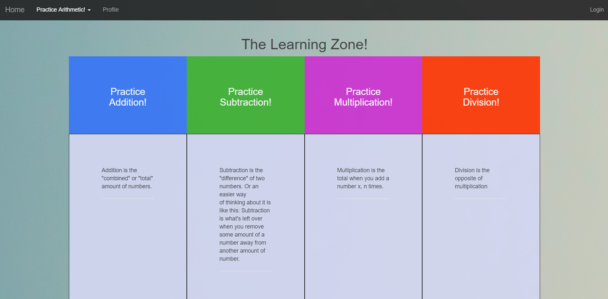
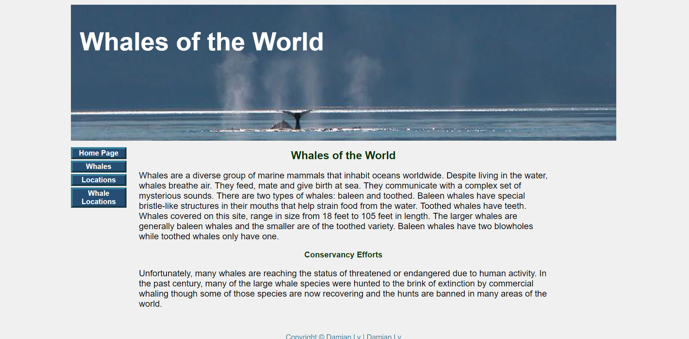

Main-Projects
Fabflix
Overview
A real, web-based commercial web site to sell movies.Stack
FrontendHTML, CSS, JavaScript, jQuery, BootStrap, dataSource
BackendTomcat server, Java, mySQL, Maven
Description
Goals of this project: To learn modern data management techniques including database connectivity, Web application development, extending database functions, database administration, and XML.Functionality of Website
- Be able to search for movies based on movie title, directors stars name, and year
- Add a movie to shopping cart and checkout
- User should be able to and must be logged in order to use Website
- Employee's should be able to login and Insert movies into database
- Results returned from search results should are paginated, limited to 10 results per page
- Full Text, Fuzzy Search, and Predictive Text functionality for search bar
- Secure with https and encrypted passwords
I created the basic structure and functionality of getting I created SQL queries to find the top 20 movies in the database according to its ranking. I took form values entered from the user to search for movies based on either 4 criteria: title, year, directors, and stars. From these values I returned as a JSON object to the frontend information such as: title, year, directors, and stars. I then parsed the JSON object on the front-end and displayed the following information in a table. I found that performance for searching for the data was quite slow, therefore I attempted to speedup performances by adding indexes on attributes that were searched quite often in the database. That sped up our performance quite a bit. Moreover, I developed mySQL procedures for adding movies the database considering whether the movie is a duplicate or not, and taking appropiate actions. I called the procedures on our backend Java Servlets. Moreover, I developed an android application to perform similar searching functionality as our website. I then proceeded to secure our website by encrypting our passwords using a java program developed and open sourced on github. I realized that our web application were vulnerable to SQL injections since we used the users search values in our queries. I proceeded to fix this issue by using preparedStatements to execute our queries instead of regular statements.
What did I learn?
This project was a real eye opener for me in terms of how the web worked, and just a new of developing in general. Before, this project I was used to lower level languages such as C and C++ and implementing things from scratch for educational purposes. Diving into this project I learned to be able to learn fast, read documentation fast, and to be able to figure our and use a variety of tools that have already been implemented and to integrate them into my application in order to save time. I learned how the web cycle worked from the client (browser) making a request to server (tomcat) and how Java Servlets served these requests, often by retrieving data from our database (mySQL) and to send a respone back, which the frontend would handle. I learned about seperation of concern and just simply learned a plethora of tools and technologies!
What was my favorite part?
My favorite part was just feeling overwhelmed but slowly taking each step and seeing our web application grow into something that was real and useable!
Arithmetic Learning Center

Overview
A web application for people of all ages to select and practice arithmetic problems that tailor to their needs and to be able to keep track of their progress.Stack
FrontendHTML, CSS, JavaScript, jQuery, BootStrap
BackendTomcat server, Java, mySQL, Maven
Description
Goals of this project: To create a useful application about something I am passionate about - math. To practice and gain more experience in web technologies/languages.Functionality of Website
- Able to Login and view progress
- Practice either, math, subtraction, division, and multiplication.
- For each type of arithmetic, able to select the number of problems and type of problems they want to practice e.g. single digit addition or multiple digit addition.
- After finishing assignments/quizzes to be able to see answers they got right/wrong.
What did I do?
I worked on this project solo. I firstly had to determine which techologies to use and to create the overall architecture/structure of my website. I had to pass along form information entered by the user to other html/js pages and to be able to parse information and make decisions about the information given. I had develop the user interface to make the website more enjoyable and easy to navigate, especially since this website was designed with youth in mind.
What did I learn?
This project helped me mainly to gain profiencies in front end technologies, namely html and JavaScript. I learned alot about being able to send information from one html page to another and to develop algorithms to render "dynamic" and random problems based on the user input.
What was my favorite part?
I really enjoyed this project because it dealt with math, which is my favorite subject, so it was just really cool to create something for kids to be able to use someday.
Whale DB

Overview
A web application to view information in a whale database.Stack
FrontendHTML, CSS
BackendXampp(Server), PHP, mariaDB
Description
Goals of this project: To gain proficiency, and learn the basic semantics of creating a dynamic web application using PHP and mariaDB on the backend.Functionality of Website
- To be able to search species of whales.
- To be able to search whale locations
- To be able to search the whale locations of certain whale species
I connected my PHP server page to my backend mariaDB database, and created queries to search for information about whales and rendered such information on my PHP page.
What did I learn?
I learned the basics of creating web applications using PHP and gained proficiency in the PHP language and how to use/integrate certain tools inside of PHP.
What was my favorite part?
I really enjoyed learning and using PHP as a language, because of its simplicity and powerfulness.